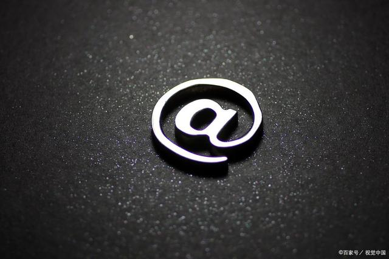

人想要成功必须做到三点，缺一不可!
一个人要想成功，必须做到以下三点：
第一点：找准位置
人，放对了地方就是天才，放错了地方就是垃圾。
比如老罗，回想起他的这些年，他原本属于演讲型人才，适合表现和表达，却非要自己创业，钻到牛角尖里，其实没有找好自己的定位。
创业十年被人嘲弄，结果做直播就成功了！
老罗的成功，不是他多么努力，而是他终于被逼回了自己的赛道。
俗话说，是金子在哪里都闪光。果真如此吗？非也。
只有找准位置，物才能尽其才，人才能尽其用，实现相应的价值。
很多人抱怨自己怀才不遇，其实是你被放错了地方。
人一旦被放错了地方，就是垃圾。这里不是说你一钱不值，而是说你的境地压根就无关你的才能。你纵有用武之力，但无用武之地。是“锅台上跑马，兜不了多大圈子。”
人生最大的不幸，就是不能摆对自己的位置。老罗之前就是不见棺材不掉泪，不撞南墙不回头，所幸他今日终于清醒的认识自己，并且摆对了自己的位置。
俗语云：龙居水浅遭虾戏，虎落平阳被犬欺。”又有俗话云：“落魄的凤凰不如鸡”。放对位置，选对赛道，才是人生的关键。
找准位置，你就是一条龙。找不准位置，你就是一条虫。
是骏马，就不要局限在锅台上跑马，而要到广阔的草原上驰骋。
是雄鹰，就不要习惯在檐下低徊，而要去搏击长天！
第二点：找到势能
人生福祸得失，皆因外界变化周期而起，人和人的命运确实有很大不同，有的人顺风顺水，有的人艰难坎坷，之所以有这种差别，更大程度应该归结于一个人能不能借势发力，命运最大的不同，其实是人发力原理的不同。
老罗这次的成功，是因为他成功的借了直播的势，借了疫情的势，借了抖音的势。
我们再来看看宇宙的样子吧，它就像一个大漩涡，可以看成一股正在旋转的能量：

它蕴含着巨大的“势能”，如果我们能跟顺应着宇宙的能量一起运转，这就是顺势而为，就可以“坐地日行八万里”。而如果我们的方向和宇宙大势的方向相反了，必定会再无形种受到一股很大的阻力。
什么叫天道？这就叫天道！天道就是宇宙的势能，就是万物运行的规律，也是一股股时代发展浪潮！
老子早就说了：天地不仁，以万物为刍狗。在时代面前我们真的很渺小！我们的想法，我们的努力，我们的牺牲，根本都不值一提。
我们就像时代洪流的一叶浮萍，我们的命运轻如鸿毛。无论你多么才华横溢，无论你多么拼搏上进，都无法逆转这个巨大的规律漩涡。
再以一个例子为说明：
现在流行的新能源电动车，早在1881年就被发明出来了，这比卡尔本茨发明的汽车还要早5年。然而直到100多年后的今天，特斯拉的出现，人们才对电动车燃起热情，还说这是新能源。
人们把特斯拉的发明人马斯克奉为英雄，却对100多年前发明电动车的人毫不知情，这是为什么呢？因为汽油才是100年前的新能源，它取代了煤，符合当时的历史潮流。而电力只有在现在才是最与时俱进的新能源！
这就是不同时代的不同势能，你借到势能了就是神，跟势能违背了，再大的能力和抱负都不值一提！
什么样的人可以称之为神人呢？人一旦看透了规律，顺应规律办事，踩准每一个变化节点就是神！